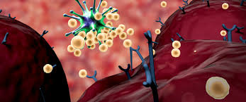

-:تركيب الجهاز المناعي
الجهاز المناعي هو الجهاز المسئول عن مقاومة الامراض ويتركب الجهاز المناعي من خلايا وانسجه واعضاءتشبه الجيش؛ويقوم كلا منها بوظائف محدده لمواجهة اي عدوة تهاجم الجسم
-:اليةعمل الجهازالمناعي
يمكننا تصور أن الجهاز المناعي هو عبارة عن جيش يدافع عن موطنه من الغزاة، ويتم تحصين الجيش من خلال الجلد وطبقة القرنية في العين وبطانة المخاط الموجودة في الفم والرئتين والخلايا والأنسجة في الأمعاء. ليس هذا فقط، بل أن الإفرازات والسوائل التي تخرج من الجسم تساعد في دفع الجراثيم للخارج كما أن الإنزيمات الموجودة فيها تقوم بقتل الجراثيم. وتتمثل هذه الإفرازات والسوائل في العرق، دموع العين، المخاط في الأنف، وإفرازات المهبل. ولذلك فإن أي ضرر بالجلد أو هذه الأنسجة وتلف الخلايا والخلل في الإفرازات والسوائل يعرض الجسم إلى هجوم الجراثيم وسهولة العدوى.
-:طرق تقوية الجهاز المناعي
- اولا الثوم
- ثانيا الحمضيات
ان من طرق تقوية الجهاز المناعي اتباع نظام غذائي صحي مثل
يعرف الثوم بقدرته علي مكافحة العدوي والفيروسات وقد يساعد الثوم ايضا علي خفض الدم وابطاء تصلب الشرايين
.يبدو ان خصائص تعزيز الثوم في جهاز المناعه تاتي من التركيز المكيف للمركبات المحتويه علي الكبريت ،مثل الأليسين
وهي تشمل البرتقال واليوسفي والليمون وغيرها Cتتميز الحمضيات بغناها بفيتامين
ومن المعروف ان فيتامين ج يساعد علي تقوية جهاز المناعه ويعتقد انه يزيد من انتاج خلايا الدم البيضاء التي تساعد علي مكافحة العدوي
النهاية
هناك طرق اخري لتقوية المناعه منها ممارسة التمارين الرياضيه مثل تمرين الضغط وتمرين المشي وغيرها